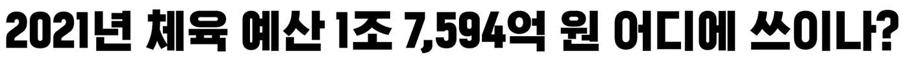
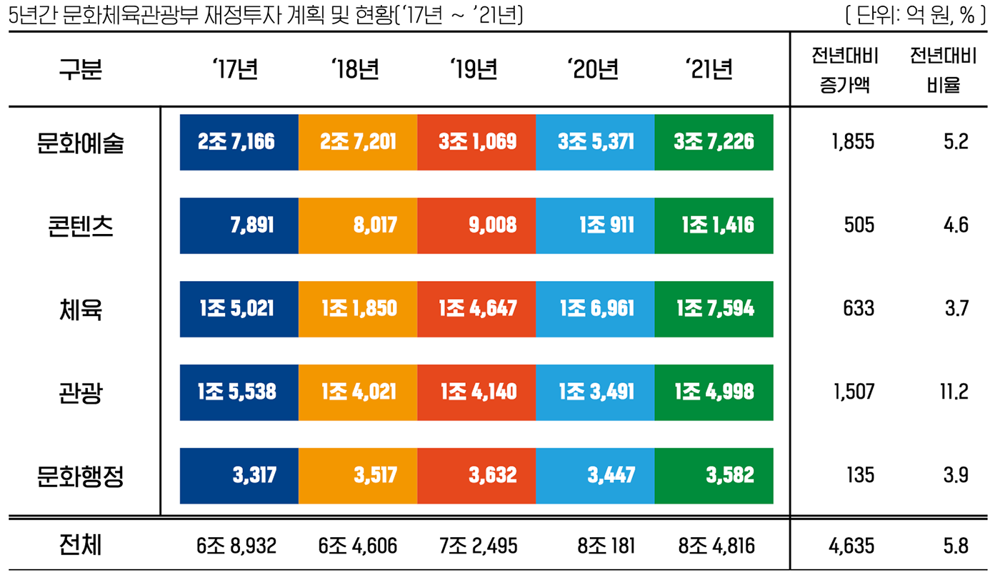
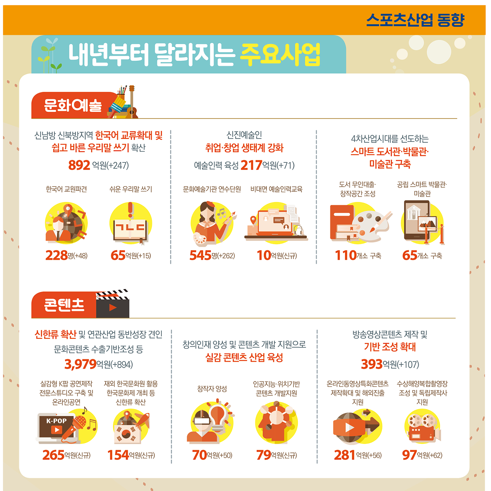
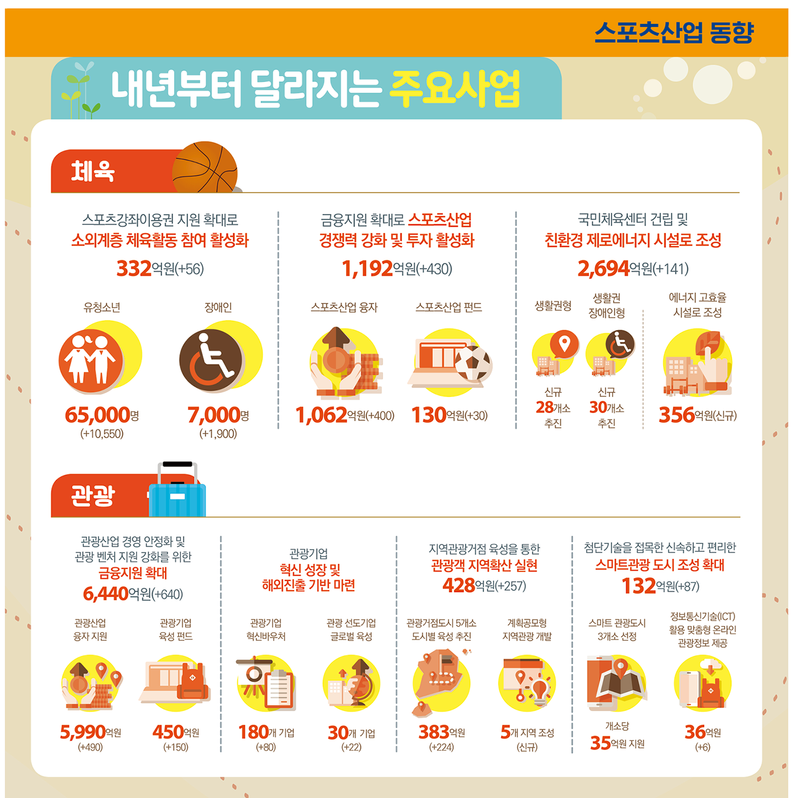
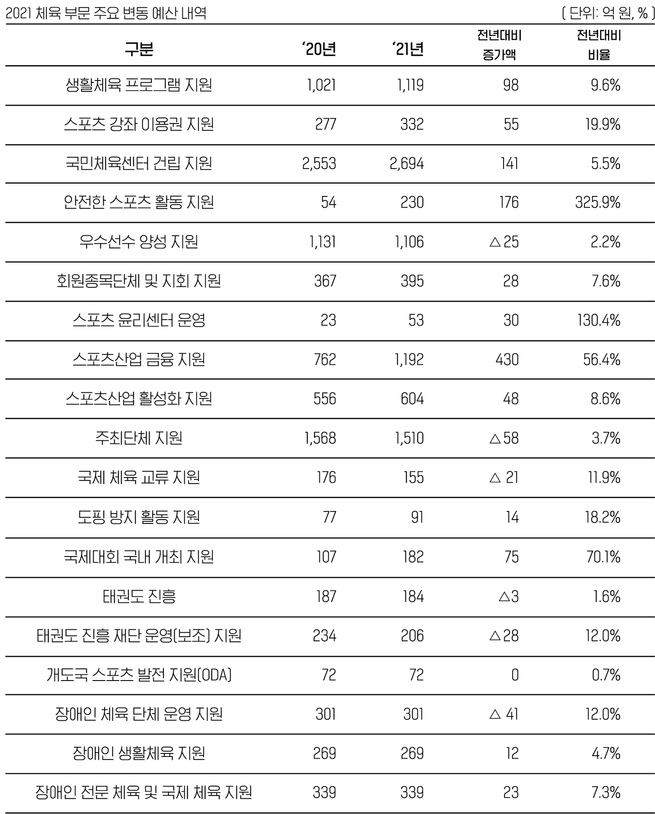

1. 문체부 5개 부문 예산 중 체육 예산은 전년대비 633억 원 증액
2021년 체육부문 예산은 문체부 전체 예산 8조 4,816억 원의 25.6%인 1조7,594억 원으로 전년대비 633억원이 증액되었다. 2017년부터 2021까지 5년간 체육예산은 전체예산의 약 22% -26%를 차지하고 있다.


2. 체육 분야 재정지원 방향
-
코로나19로 위축된 스포츠시장 활성화에 투자·소비 지원
코로나19로 인한 스포츠소비 위축으로 자금난을 겪는 스포츠 기업의 고충을 덜어 주기 위해 융자규모와 펀드지원을 확대하고 격감한 체육시설 이용률을 높이기 위해 할인권 지원을 늘린다. 한편 코로나19로 형성된 비대면 스포츠시장의 수요에 대응할 수 있게끔 이 분야 육성사업을 신설하고 연구개발(R&D) 사업비를 증액하였다. -
생활체육 향유기회 확대 및 국제경기대회의 성공적 개최 지원
국민건강 증진을 위해 생애주기별 맞춤형 스포츠 프로그램 제공 등 생활체육 활성화를 지속 지원하고 여성·청소년·다문화가정 등 취약계층 체육활동 참여 기회를 확대한다. 2024 동계청소년올림픽, 2032 하계올림픽 등 향후 국제경기대회의 성공적인 유치·준비를 지원한다.

3. 체육 부문 주요 변동 예산
2021년 체육부문에서 주목할 주요사업은 1,192억 원이 배정된 스포츠산업 금융지원 부문과 2,694억 원이 배정된 국민체육센터 건립사업이다. 스포츠산업금융지원 예산은 스포츠산업의 경쟁력 강화와 투자활성화를 위해 스포츠산업융자에 400억 원, 스포츠산업펀드에 30억 원이 증액되었다. 국민체육센터 건립지원 예산은 지속적인 확충과 에너지 절감형 시설 조성을 위해 141억 원이 증액되었다.

-
생활체육 분야: 다양한 계층의 생활체육 참여기회 확대
생활체육 분야는 일부 체육시설 건립사업의 종료로 ‘20년 대비 410억 원(△4.5%)이 감액된 8,727억 원이며, 이를 제외한 생활체육 프로그램 등의 지원은 ’20년 대비 267억 원(4.2%) 증액된 6,658억 원을 편성하였다.스포츠강좌이용권 지원 대상 확대 저소득층 및 장애인의 스포츠체험기회 제고 연 5만9천명에서 7만2천명으로 확대 편성 유소년 스포츠기반 구축사업 신설 유·청소년들의 스포츠 참여기회를 확대 예산 40억 원 또바기 체육돌봄 사업 신설 국내 이주배경 청소년을 대상 생활체육 강습과 캠프활동 지원 예산 10억 원 국민체육센터 확충 지속적 확충을 위한 예산 확대 기존 2천 553억 원에서 2천 694억 원 확대 편성 야구·탁구·당구 종목 승강제리그(디비전) 스포츠클럽 기반 생활체육 활동 저변확대 ‘20년 시군구 리그에서 시도리그까지 확대 운영 기존 108억 원에서 128억 원 확대 편성 -
전문체육 분야: 환경별 대응 가능한 콘텐츠 개발 투자
전문체육 분야는 ‘20년 대비 58억 원(1.5%)이 증액된 3,939억 원을 편성하였다.스포츠 정보통신기술(ICT) 통합체계 구축 지원사업 신설 엘리트 체육과 생활체육의 통합 연계 운영 및 생애주기별 이력 관리 예산 30억 원 과학적 비대면 훈련 콘텐츠 개발 신설 코로나19, 기후변화에 대응이 어려운 종목에 대해 가상현실과 인공지능(AI)을 활용 예산 100억 원 회원종목단체 인건비 추가 지원 회원종목단체의 전문성 강화를 위함 기존 308억 원에서 317억 원 확대 편성 스포츠윤리센터 운영 확대 지원 권역별 지역사무소 3개소를 신설 각 지역의 인권침해 사례가 발생할 경우 즉각적인 상담·조사·조치가 이루어져 인권 침해 방지를 위한 초석을 마련 기존 23억 원에서 53억 원 확대 편성 -
스포츠산업 분야: 비대면 스포츠 시장 활성화 지원
국민에게 체육소비 할인권 지원 코로나19로 침체된 체육시설의 이용률 제고 기존 122억 원에서 180억 원 확대 편성 체육시설 융자 지원 코로나19로 인한 체육시설 융자 지원 확대 기존 662억 원에서 1,062억 원 확대 편성 비대면 스포츠 시장 육성 사업 신설 비대면·온라인 수요에 대응하기 위해 사업 신설 예산 39억 원 비대면 스포츠 분야 연구개발(R&D) 사업 증액 비대면 스포츠 체험 및 관람 기술 개발 등을 지원 기존 78억 원에서 177억 원 확대 편성 -
국제스포츠 분야: 성공적인 국제대회 개최 사업 지원
2024 동계청소년올림픽 대회준비 성공개최를 위해 40억 원 지원 2032 남북 공동올림픽 유치 추진 예산 40억 원 지원 2022 전북 아태마스터스대회 예산 11억 원 지원 2021 서울 ANOC 총회 예산 8억 원 지원